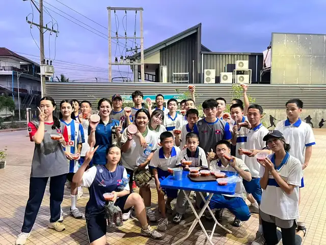
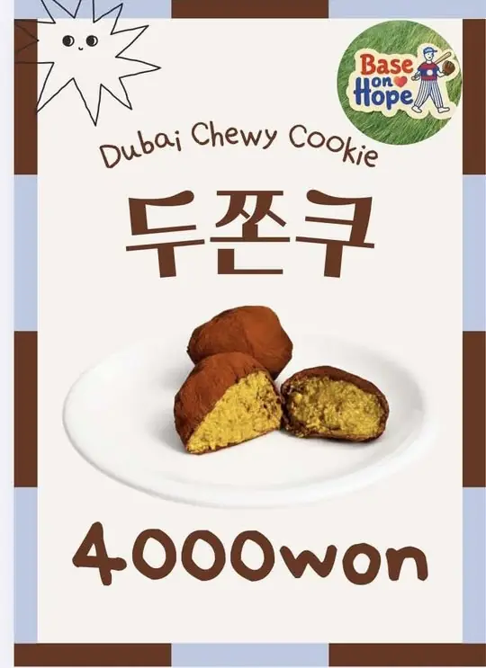
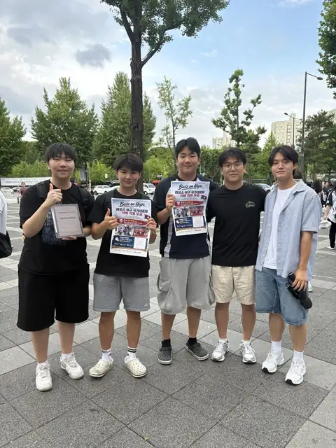
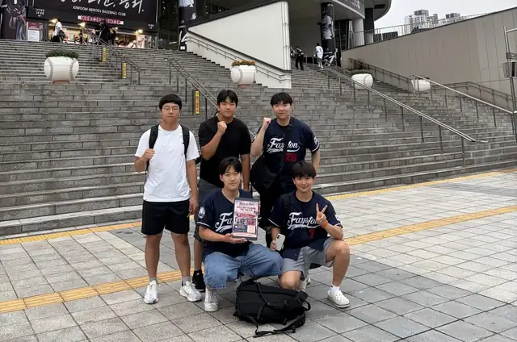
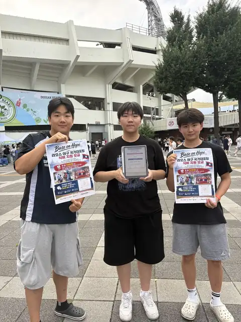
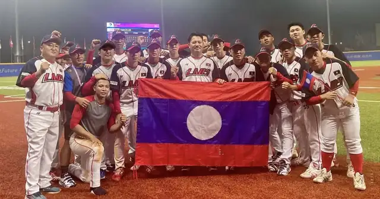
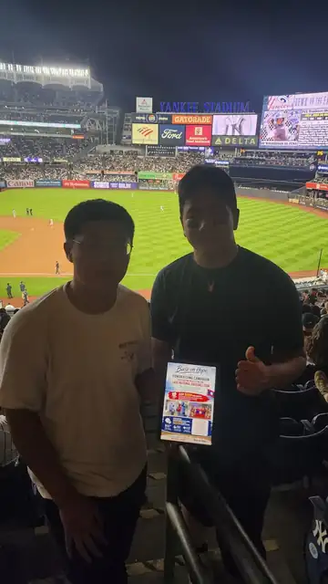
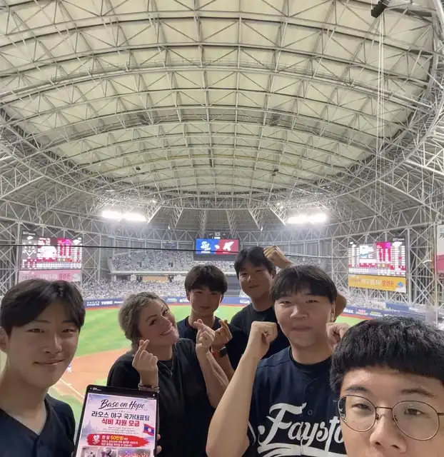
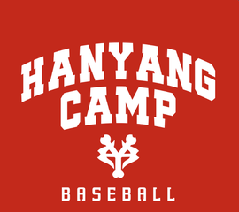
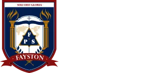

Co-President
Suhyun (Kevin) Park
박수현Leads communication with the Laos National Baseball Team and its coaching staff, and oversees how funds are delivered and used.
Student-led nonprofit club
Base on Hope supports the Laos National Baseball Team through awareness, fundraising, and youth-led action.
About Us
Our mission is to build stable, ongoing funding for the nutrition and training environment of the Laos National Baseball Team. We work directly with the team, raise funds through campaigns and school events, and keep every record transparent.
Our goal: ₩300,000 (about $220) a month — enough for the Laos team to keep training on fuller, healthier meals.
Meet the Laos National Team →Founders
Co-President
Leads communication with the Laos National Baseball Team and its coaching staff, and oversees how funds are delivered and used.

Co-President
Sets Base on Hope's overall direction and operating strategy, and coordinates decisions across departments.

Vice President
Manages external partnerships and school communication, and sets and reviews our short-, mid-, and long-term goals.
Projects

Funds we raise go to the Laos national team for players' meals and training, and we stay in touch to see the difference.

Handmade cookies sold out in 15 minutes — the fastest fundraiser sellout in our school's history. ₩400,000 raised.

From Jamsil and Gocheok to Yankee Stadium in New York — we bring the Laos team's story to baseball fans.
Videos
One of the young players we play for.
From school booths to baseball stadiums.
Gallery





Sponsorship
We welcome sponsorships, donations, and collaborations from companies, organizations, and individuals who want to support youth-led social impact.
Partners

Hanyang Camp · Body Upgrade

Fayston Preparatory School of Suji
Get Involved
Want to help at a fundraiser, join the stadium tour, design merch, or run our Instagram? Fill out the form below.
Open Participation FormFAQ
Any student who wants to support our campaigns, help with fundraising, or contribute to our projects can join.
Donations and fundraising proceeds go toward meals and the training environment of the Laos National Baseball Team, after basic program costs. Our Treasury department records all income and spending.
Companies can support us through sponsorships, donations, equipment, or collaboration opportunities.
Contact
Email: fps.baseonhope@gmail.com
Instagram: @base.on.hope